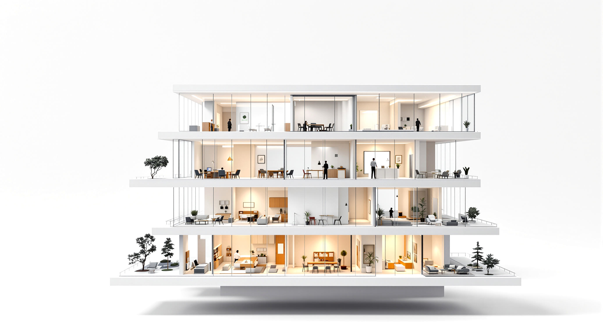

Dein Kunde betritt ein Haus unter deiner Marke: Der KI-Berater antwortet sofort, Mandate, Dokumente und Zahlen liegen eine Etage weiter. Menschen bucht er im selben Fenster dazu.

Kein Menü, kein Seitenwechsel. Drüberfahren beschriftet die Etage, ein Klick zoomt hinein.
Der Berater, der sofort antwortet, Tag und Nacht.
Jedes Projekt mit Stand, Fahrplan und Verantwortlichen.
Verträge, Analysen und Ablage je Mandat.
Zeiten, Rechnungen und was offen ist.
Berater, Rollen und wer woran arbeitet.
Anfragen, Termine und der Weg zum Menschen.
White Label heißt hier wörtlich: Das Haus trägt das Schild deiner Beratung.
Nordholm & Partner ist nur ein Beispiel. Name, Logo und Farben kommen von deiner Beratung. Deine Kunden arbeiten mit deinem KI-Berater und buchen deine Menschen dazu. Die Software dahinter sieht niemand.